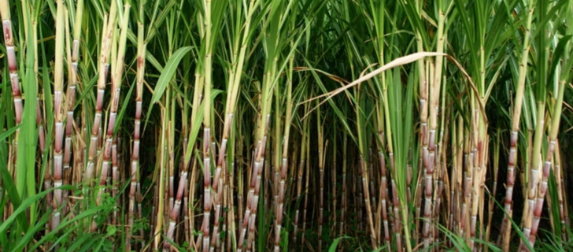
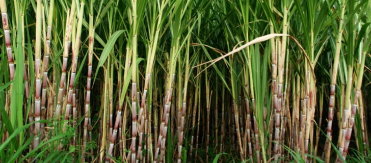
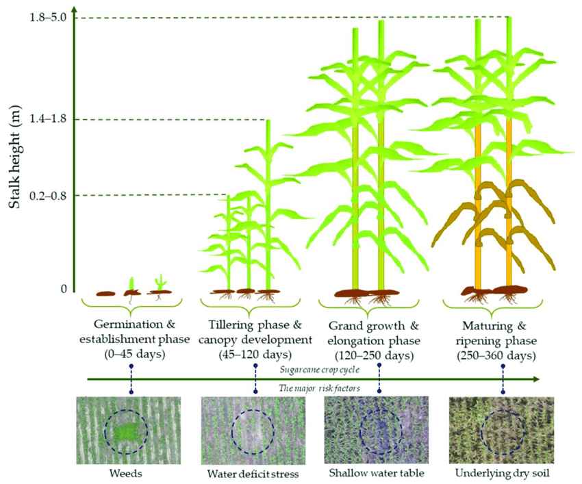
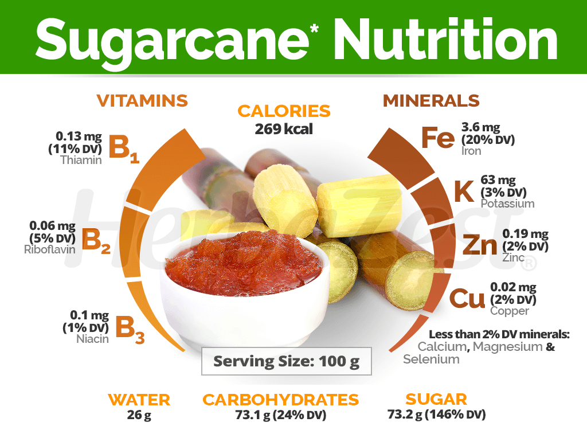
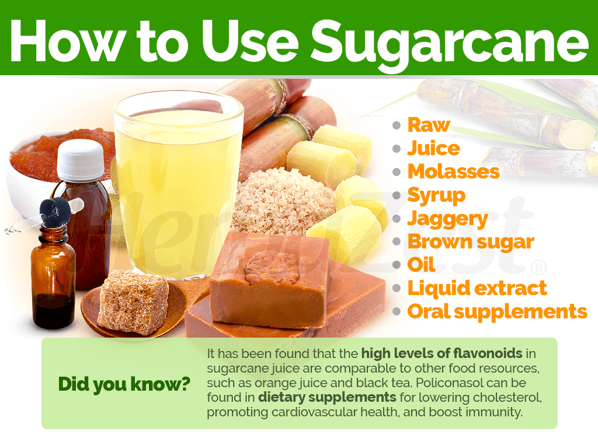
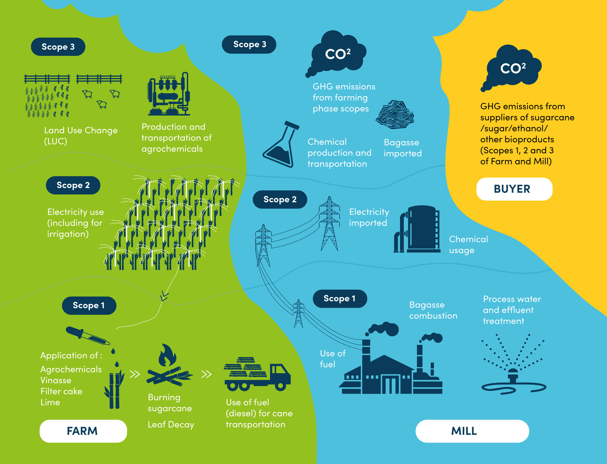

Sugarcane
Types of Sugarcane:
Common Sugarcane (Saccharum officinarum):
Description: This is the most widely cultivated species of sugarcane, known for its high sugar content.
Uses: Primarily used for sugar production, but also for biofuel and molasses.
Wild Sugarcane (Saccharum spontaneum):
Description: A wild variety that grows in tropical regions, often found in wetlands.
Uses: Less common for sugar production but can be used for erosion control and as fodder.
Energy Cane:
Description: A hybrid variety developed for bioenergy production, with lower sugar content.
Uses: Primarily used for biofuel production.
Growing Conditions
Climate:
Temperature:
Optimal Range: Sugarcane thrives in warm temperatures, ideally between 20°C to 32°C.
Cold Tolerance: It is sensitive to frost and can be damaged by temperatures below 10°C.
Humidity: Prefers humid conditions, ideally between 50% to 80%.
Rainfall and Moisture:
Moderate Rainfall: Requires consistent rainfall, generally between 1,000mm to 2,500mm per year.
Irrigation: In areas with insufficient rainfall, irrigation is essential to maintain soil moisture.
Drainage: Well-drained soil is crucial to prevent waterlogging, which can harm sugarcane roots.
Sunlight:
Requires full sun, ideally receiving 6 to 8 hours of direct sunlight daily for optimal growth and sugar accumulation.
Soil:
Prefers well-drained, fertile soils with a pH range of 6.0 to 7.5.
Soil Type: Sandy loam or clay loam soils are ideal for sugarcane cultivation.
Organic Matter: Incorporating organic matter enhances soil fertility and structure.
 

Soil Preparation:
Plowing and Tilling: Proper soil preparation involves plowing and tilling to create a fine seedbed, improving soil structure.
Leveling: Leveling the field ensures uniform irrigation and prevents waterlogging.
Soil Conservation:
```html
Erosion Control: Practices such as contour plowing, terracing, and maintaining ground cover help prevent soil erosion.
Crop Rotation: Rotating sugarcane with other crops can improve soil health by reducing pests and diseases and enhancing soil nutrient levels.
Water Requirements:
General Water Needs:
Sugarcane requires approximately 1,000-2,500 millimeters (mm) of water throughout its growing season, depending on the variety, climate, and soil conditions.
Critical Growth Stages:
Germination: Adequate soil moisture is necessary for seed germination and seedling establishment.
Vegetative Stage: Water is crucial during the vegetative stage to promote leaf development and growth.
Maturation Stage: Adequate moisture at the maturation stage ensures proper sugar accumulation and ripening.
Harvest Stage: Reducing irrigation towards the end of the growing season allows the soil to dry, facilitating harvesting.
Drought and Stress Management:
Drought-Resistant Varieties: Plant drought-resistant sugarcane varieties in regions prone to water scarcity.
Deficit Irrigation: Implement strategies where water is applied during the most critical growth stages to manage water resources during drought conditions.
Planting and Seeding:
Planting:
Sugarcane can be sown either by planting setts or by using tissue culture for more uniform planting. They are typically planted in the spring after the last frost date.
Seeding Rates:
The seeding rate varies but generally ranges from 20 to 40 setts per hectare, depending on the variety and planting method.
Nutritional Value:
Carbohydrates:
Sugarcane is a rich source of carbohydrates, providing energy.
Fiber:
Sugarcane contains dietary fiber, promoting digestive health.
Vitamins and Minerals:
Sugarcane contains essential nutrients, including vitamins C and B6, potassium, and manganese.
Uses:
Food:
Sugarcane is commonly consumed raw, used in baking, and as a primary ingredient in beverages and desserts.
By-Products:
Sugarcane bagasse can be used as biofuel, and sugarcane molasses is used in animal feed and as a binding agent.
Environmental Impact and Sustainability:
Sugarcane is a relatively sustainable crop, requiring less water compared to other crops. However, its production can have environmental impacts, such as deforestation and water pollution. Sustainable practices, such as organic farming and integrated pest management, can help minimize these impacts.
